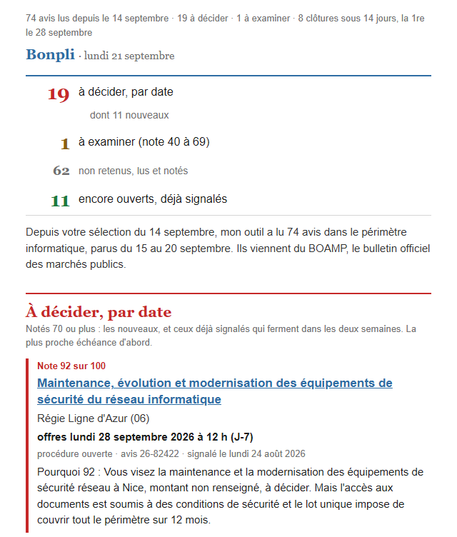

Qui est derrière
Armand Verdi, fondateur de Bonpli. Ingénieur IA, j'ai construit l'outil. Je relis et je valide chaque réponse à une question avant l'envoi. L'accusé d'un « stop » et l'email qui lance l'essai après un « ok » partent seuls. Le tri, lui, tourne sans moi, et une note peut se tromper.
Bonpli est mon nom commercial, et ce que vous lisez ici se vérifie ailleurs. L'immatriculation, au registre du commerce. Les appels d'offres retenus, sur boamp.fr. Si je vous ai écrit, vos coordonnées viennent de votre site et de l'annuaire officiel des entreprises. Un « stop » en réponse, et je n'écris plus.
Un extrait réel
Email du lundi 21 septembre 2026 pour une entreprise d'infogérance, cloud et cybersécurité en région PACA ; avis parus du 15 au 20 septembre, notes au barème actuel, textes tels que produits par l'outil.

74 avis lus depuis le 14 septembre · 19 à décider · 1 à examiner · 8 clôtures sous 14 jours, la 1re le 28 septembre
Bonpli · lundi 21 septembre
19 à décider, par date, dont 11 nouveaux · 1 à examiner (note 40 à 69) · 62 non retenus, lus et notés · 11 encore ouverts, déjà signalés
À décider, par date
Note 92 sur 100 · Maintenance, évolution et modernisation des équipements de sécurité du réseau informatique · Régie Ligne d'Azur (06)
Pourquoi 92 : Vous visez la maintenance et la modernisation des équipements de sécurité réseau à Nice, montant non renseigné, à décider. Mais l'accès aux documents est soumis à des conditions de sécurité et le lot unique impose de couvrir tout le périmètre sur 12 mois.
Note 79 sur 100 · Fourniture, configuration, maintenance informatique et hébergement infrastructure SPL C'Chartres Tourisme · C'Chartres Tourisme (28)
Pourquoi 79 : Infogérance, maintenance de serveurs et hébergement d'infrastructure pour 175 000 € au lot 2, à Chartres, à décider. Mais l'accord-cadre court sur 48 mois en Eure-et-Loir, loin de votre région, avec fourniture de matériel au lot 1.
Note 89 sur 100 · Accord-cadre MCO, infogérance et renouvellement infrastructure réseau et serveurs, Castelnaudary · Ville Castelnaudary (11 et 31)
Pourquoi 89 : La Ville de Castelnaudary achète maintien en condition opérationnelle, infogérance et renouvellement d'infrastructure réseau et serveurs dans l'Aude, à décider. Mais la durée de 48 mois à compter du 1er janvier 2027 et l'attribution à un seul opérateur, hors PACA, pèsent.
Note 92 sur 100 · nouveau · Infrastructure informatique et services associés · Etab Public Amenagement Euromediterra (13)
Pourquoi 92 : Infrastructure informatique, virtualisation, sauvegarde, cybersécurité et maintien en condition opérationnelle à Marseille, avec 50 000 € HT maximum en bons de commande : à décider. Mais le marché va à un seul titulaire pour 5 ans, sans allotissement ni négociation, avec exécution sur place à L'Astrolabe.
62 non retenus, lus et notés
Les trois mieux notés, avec la raison :
Note 35 sur 100 · Hébergement, maintenance évolutive des sites internet et refonte de l'intranet du Département de Tarn et Garonne · Departement De Tarn-et-Garonne (82) · avis 26-89656 · Ce qui coince : Le lieu d'exécution se situe hors PACA et le contenu relève du web, pas de l'infogérance, sur 48 mois.
Dans l'extrait, « vous » désigne cette entreprise. Extrait abrégé : les trois premiers avis à décider, le premier nouveau de la semaine, qui vient plus loin dans la même liste, et la première des trois lignes des non retenus. Les fiches en annexe de l'email (résumé, points clés) ne sont pas reprises. « Signalé le » donne la date du premier email où l'avis est apparu.
Ce que vous recevez le lundi
Un seul email : la sélection de la semaine. Pas de tableau de bord, pas d'application, pas d'alerte en temps réel.
- À décider, par date : tous les nouveaux notés 70 ou plus, et ceux déjà signalés qui ferment dans les deux semaines. La plus proche échéance d'abord, chacun avec sa note, sa justification et son lien.
- À examiner : ceux notés de 40 à 69, en une ligne chacun, avec leur note et leur lien.
- Encore ouverts : ceux déjà signalés, notés 70 ou plus, qui ferment plus tard, en une ligne chacun.
- Non retenus : les autres, comptés ; les trois mieux notés en une ligne, avec la raison.
En annexe, le résumé et les points clés (calendrier, certifications, lots, lieu) de chaque appel d'offres à décider, et des premiers à examiner.
Une seule source
Le BOAMP, rien d'autre. Il inclut les avis français qui paraissent aussi au Journal officiel de l'Union européenne (JOUE) en raison de leur montant. Je ne couvre ni les plateformes d'acheteurs, ni les marchés privés. Un appel d'offres absent du BOAMP n'apparaît pas dans votre sélection.
Comment l'outil note
L'outil lit votre métier sur votre site et dans l'annuaire officiel des entreprises. La note tient compte de la taille de votre entreprise, du montant du marché, des références exigées et de votre région. Un marché trop gros ou hors de votre métier est noté bas. Une présence sur site exigée loin de chez vous baisse la note.
Une note peut se tromper : le tri est automatisé, personne ne le relit avant l'envoi. C'est pour ça que chaque appel d'offres à décider porte sa justification, et que son lien vers l'avis est toujours là. Et si l'outil vous a mal compris, corrigez votre profil (métier, certifications, régions) en répondant à un email, en une ligne. Je fais la correction, et elle compte dès le lundi suivant.
L'essai
Deux semaines gratuites, sans carte bancaire : aucun prélèvement possible, rien ne vous engage. L'essai démarre sur votre « ok », dans la journée, du lundi au vendredi. Un message de bienvenue dit ce que l'outil a compris de votre métier et de votre région, à corriger en une ligne. Votre première sélection suit. Puis une nouvelle chaque lundi. Trois jours avant la fin, je vous demande si vous voulez continuer. Sinon, tout s'arrête tout seul après les deux semaines, avec un dernier message de ma part.
Le prix
- 100 € par mois (TVA non applicable, art. 293 B du CGI) pour mes dix premiers abonnements payants, dans l'ordre du premier paiement. Vous gardez ce tarif tant que vous restez abonné.
- 150 € par mois à partir du onzième abonnement payant.
- 1 000 € pour un an, offre fondateur réservée à ces dix premiers, en un seul paiement, non reconductible.
Le tarif est par entreprise, pas par personne : plusieurs adresses chez vous reçoivent la sélection, sans supplément. Vous résiliez quand vous voulez, en me répondant.
Pour démarrer
Si vous avez reçu un email de ma part, répondez « ok » : l'essai démarre dans la journée, du lundi au vendredi. Pas d'email ? Écrivez-moi à armand@bonpli.fr avec le nom de votre entreprise : je vous réponds sous deux jours ouvrés.